Lotus Car Rental: Test 28, Hide Header on Scroll Down (Mobile, Sitewide)
lotuscarrental.is · sitewide · all mobile users · Convert exp 100053078 · Control 1000257924 / Variant 1000257925 · preview links (cro_mode=qa) · tested 2026-11-11 · Mobile Chrome (Pixel 5) + Mobile Safari (iPhone 12)
What the test should do (from the brief + wireframes)
| Arm | Expected | What we found |
|---|---|---|
| Control | Sticky header stays pinned at the top while scrolling | Pinned at top:0 through every scroll on every page. ✅ |
| Variant | Hide header on scroll down. Show it again on scroll up. | Down: translateY(-100%), fully off-screen (bottom = 0px), no leftover strip or gap. Up: back at top:0. Shown within 20px of the top. Small <10px jitter ignored. Repeated cycles work. ✅ The hide comes late though, see BUG-01. |
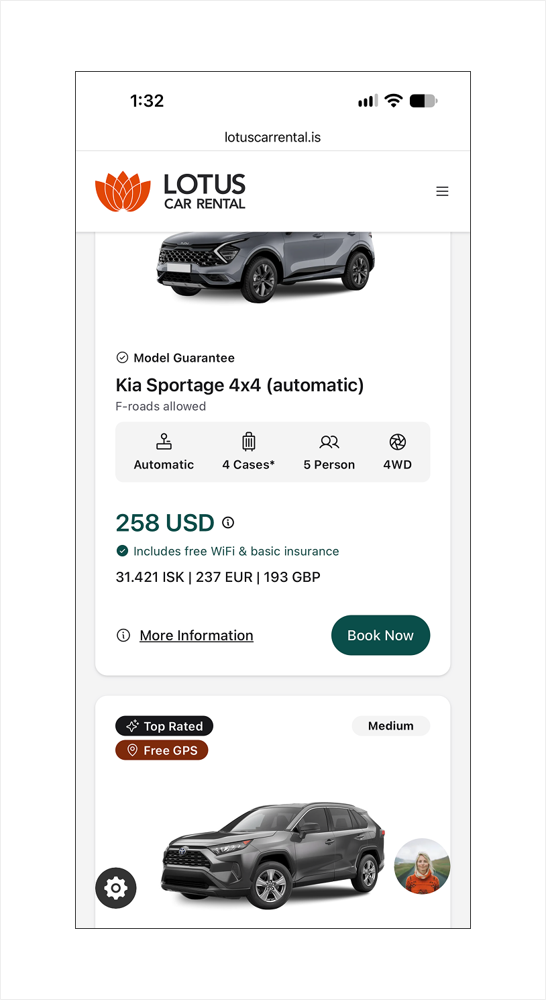
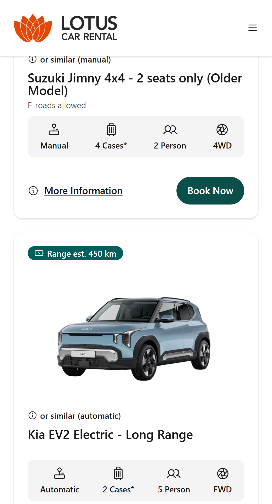
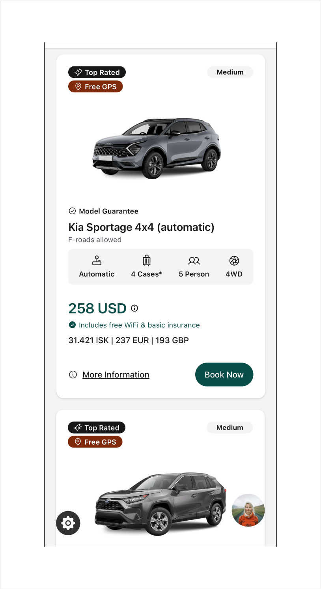
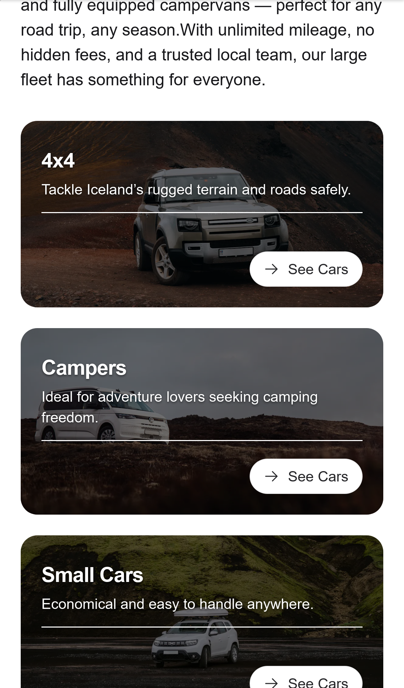
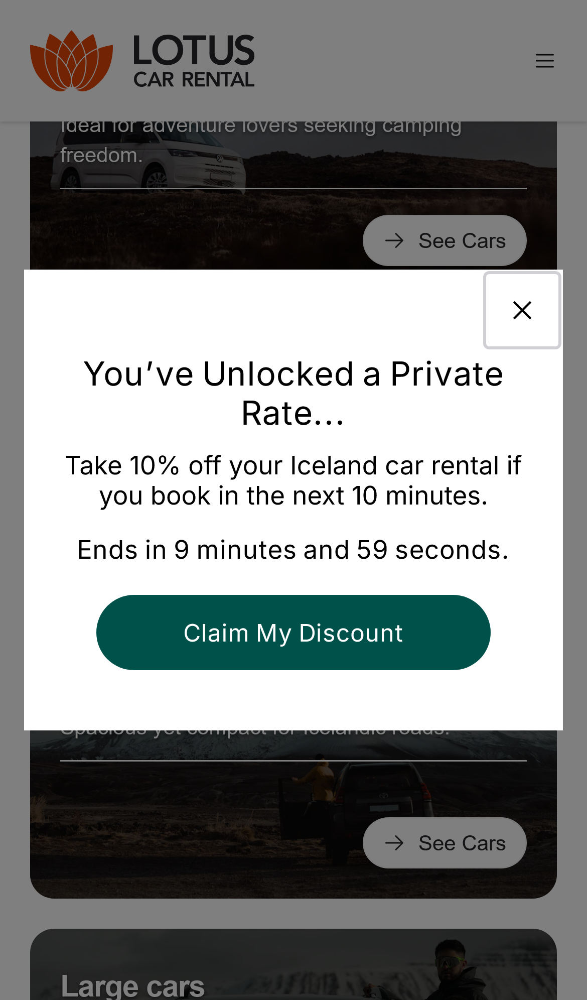
Bugs
BUG-01 · Medium Header only hides after scrolling stops, not while the user is scrolling down
The scroll handler is wrapped in a 100ms debounce (vB.js:79, debounce(toggleHeader, 100)). A debounce runs only once scroll events have stopped for 100ms. On a phone, a swipe plus its momentum fires scroll events for the whole movement. So the header stays visible while the content scrolls under it, then pops away at the end. The wireframe and brief describe the header hiding on scroll down.
| Browser | Continuous scroll stopped | Header hid at |
|---|---|---|
| Mobile Chrome (Pixel 5) | 1195 ms | 1328 ms (after the scroll ended) |
| Mobile Safari (iPhone 12) | 1143 ms | 1361 ms (after the scroll ended) |
TC05: starting from a revealed header mid-page, scroll 12px every frame for 1.2s.
Suggested fix: use a throttle or requestAnimationFrame instead of the debounce. The existing 10px minScroll already prevents jitter.
var ticking = false;
window.addEventListener("scroll", function () {
if (ticking) return;
ticking = true;
requestAnimationFrame(function () { toggleHeader(); ticking = false; });
}, { passive: true });
BUG-02 · Low Header stays hidden if the viewport grows past 1024px while hidden (tablet rotate)
toggleHeader() returns early when innerWidth > 1024 (vB.js:57) without removing cre-t-28-header-hidden. If the header is hidden and the viewport then widens past 1024px, it stays off-screen even when scrolling up. This happens on a tablet rotating to landscape or a resized window. Reproduced in TC09: hide at 393px, resize to 1100px, scroll up gives top=-81, hidden=true on both browsers. Phones in landscape stay under 1024px, so this only matters if tablets are in the "mobile" audience.
Fix: remove the class before the early return: if (window.innerWidth > 1024) { header.classList.remove(hiddenClass); return; }
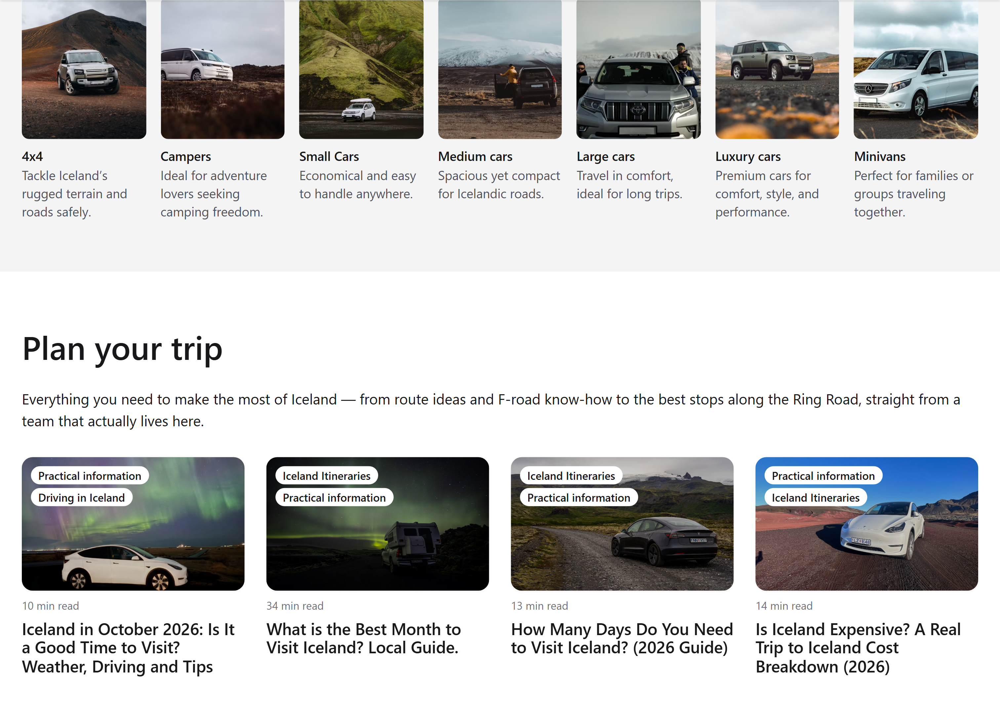
Q-01 · Targeting question Test doesn't run on German (/de) or Spanish (/es) pages
The brief says "sitewide". On /de, /de/mietwagen-island and /es, Convert doesn't bucket the visitor into exp 100053078, even with the force link. Only exp 100053089 runs there. The variant header never hides on those pages. /fr and /it do bucket, but they serve English content (lang="en-us"). Same result on both browsers, both arms (TC08). Client to confirm: is English-only intended, or should the URL targeting include the localised paths?
What passed (both browsers, both arms)
- TC01 Correct bucketing.
body.cre-t-28and the CSS appear in the variant only. Exactly one sticky header. Deployed CSS matches localvB.cssexactly. - TC02 Scroll down. Variant header fully off-screen and the top of the viewport is page content. Control stays pinned.
- TC03 Scroll up shows the header again. A second down/up cycle works too.
- TC04 Shown at the top and within 20px of it. A 5px up-jitter doesn't flicker it back.
- TC06 After scrolling up, the hamburger is reachable. The full-screen menu (a separate
fixed z-[60]overlay, outside the header) opens and closes normally, and the header is visible after closing. - TC07 Sitewide, English: /our-rental-cars, /our-rental-cars/4x4, /insurance, /faq, /blog, /about-us/driving-in-iceland, /rent-a-car-in-iceland/keflavik-airport, /our-services/airport-shuttle, /contact. Hide/show works on each, and no page has another sticky bar left behind with a gap.
Results by browser
| TC | Pixel 5 · control | Pixel 5 · variant | iPhone 12 · control | iPhone 12 · variant |
|---|---|---|---|---|
| TC01 bucketing + markers | PASS | PASS | PASS | PASS |
| TC02 scroll down | PASS | PASS | PASS | PASS |
| TC03 scroll up | PASS | PASS | PASS | PASS |
| TC04 top + thresholds | PASS | PASS | PASS | PASS |
| TC05 continuous swipe | PASS | FAIL · BUG-01 | PASS | FAIL · BUG-01 |
| TC06 hamburger menu | PASS* | PASS | PASS* | PASS |
| TC07 English pages | PASS | PASS | PASS* | PASS* |
| TC08 /de, /es | FAIL · Q-01 | FAIL · Q-01 | FAIL · Q-01 | FAIL · Q-01 |
| TC09 resize >1024 | PASS | FAIL · BUG-02 | PASS | FAIL · BUG-02 |
* Passed on re-run after fixing the test harness, not the variation:
(a) TC06 control: the timed "You've Unlocked a Private Rate" modal from another live test (#cre-t-18-modal) covered the menu button and blocked the tap. It's now hidden in the spec.
(b) TC07 iPhone: Microsoft Clarity beacon CORS errors (WebKit, both arms) and React #418 hydration errors (both arms) are site-native noise and are now filtered out.
(c) TC07 iPhone variant: one sample on /our-rental-cars (21,865px tall) read top=-6 mid-transition. It settled to 0 on re-sample, and the re-run passed. The saved JSON in lotus28-results/ is from the first full run, before these harness fixes.
Other notes
- Other live overlays: a "Singles Day offer 11% OFF" promo modal opens on first load, and the
cre-t-18Private Rate modal appears after a delay. Neither interacts with the header logic. Both sit above it. isMenuOpen()looks for[role=dialog][data-state=open](Radix). The site uses Base UI (data-open), so that selector never matches. In practice it doesn't matter: the menu button is in the header, so the header is always visible when the menu opens, and the menu is a separate full-screen overlay. It's dead code, though.- The transition is 0.1s linear, which is quick and a bit abrupt. The wireframe gives no animation spec, so this is fine as built.
- Real iOS hardware and iOS rubber-band overscroll (negative
scrollY) couldn't be simulated. The code handles it becausey ≤ 20shows the header.
How it was tested
- Order: wireframes (Control.png / Variant.png), then
local_testing/Local2/variation/vB.js+vB.css, then the live preview links, then the Playwright spectesting/lotus28-hide-header.spec.js(9 TCs × 2 arms). - Projects:
Mobile Chrome (Pixel 5)andMobile Safari (iPhone 12), run one at a time. Cookie banner hidden (no consent). Promo modal closed with Escape. - Header state is read from
getBoundingClientRect()ofheader.sticky.top-0after each scroll, with a 450ms settle for the debounce and transition. - Recon scripts:
testing/lotus28-recon/.
All screenshots
Mobile Chrome (Pixel 5)

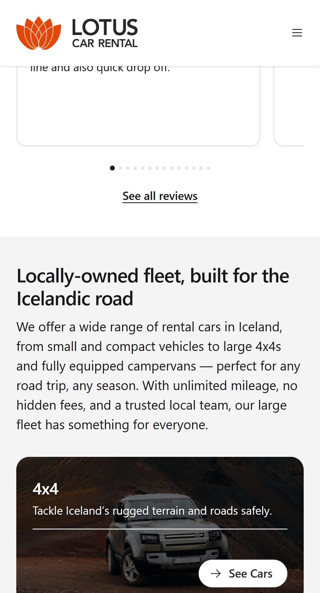
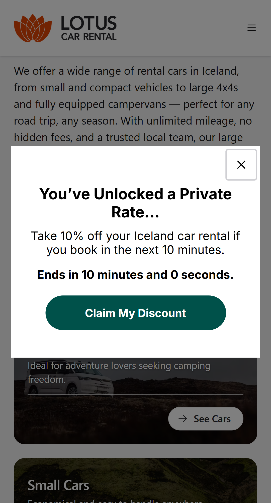
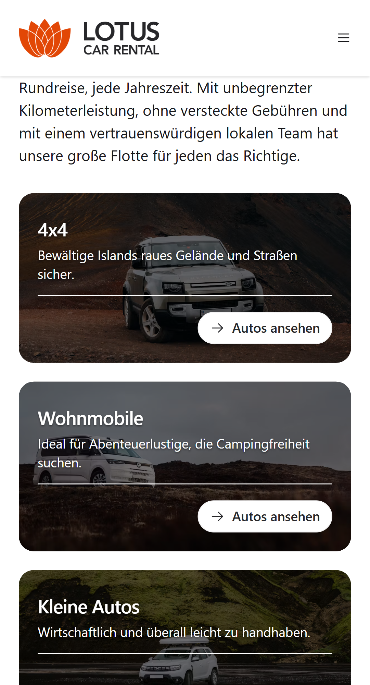
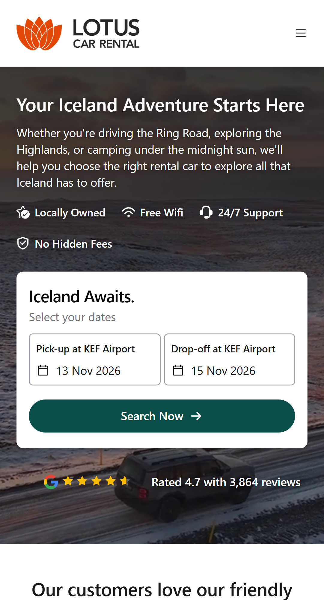
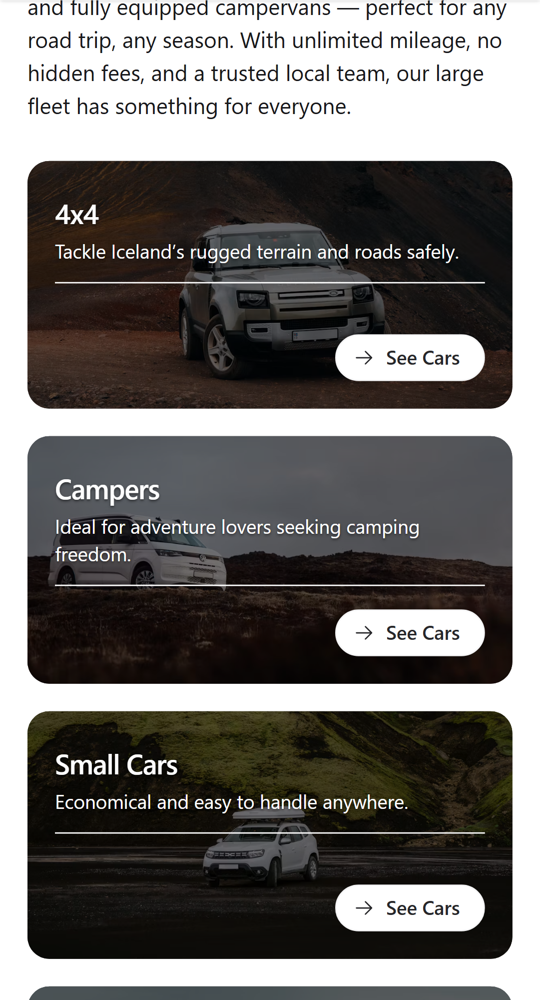

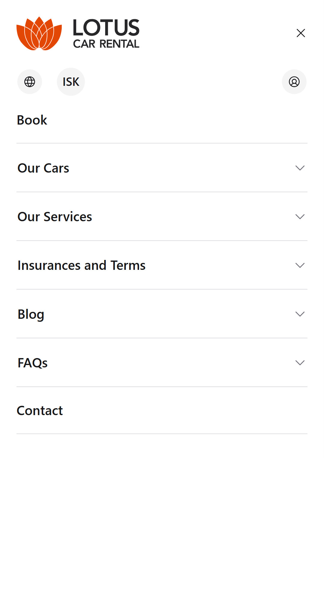
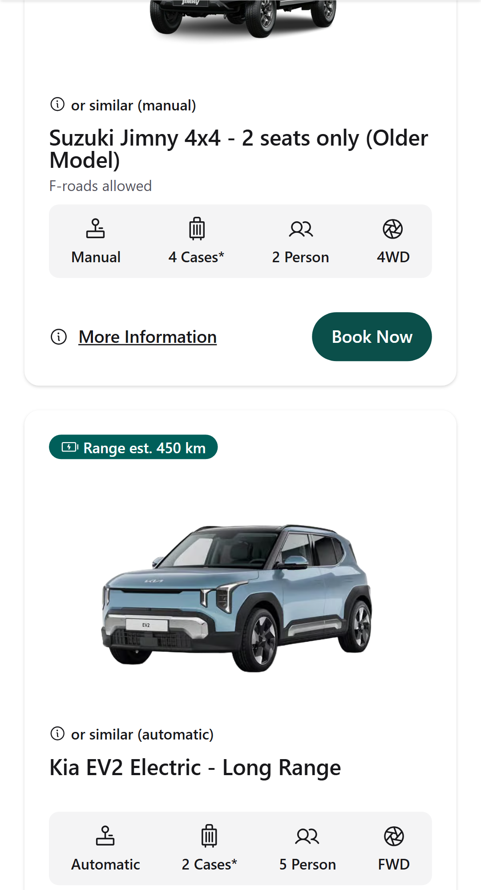

Mobile Safari (iPhone 12)
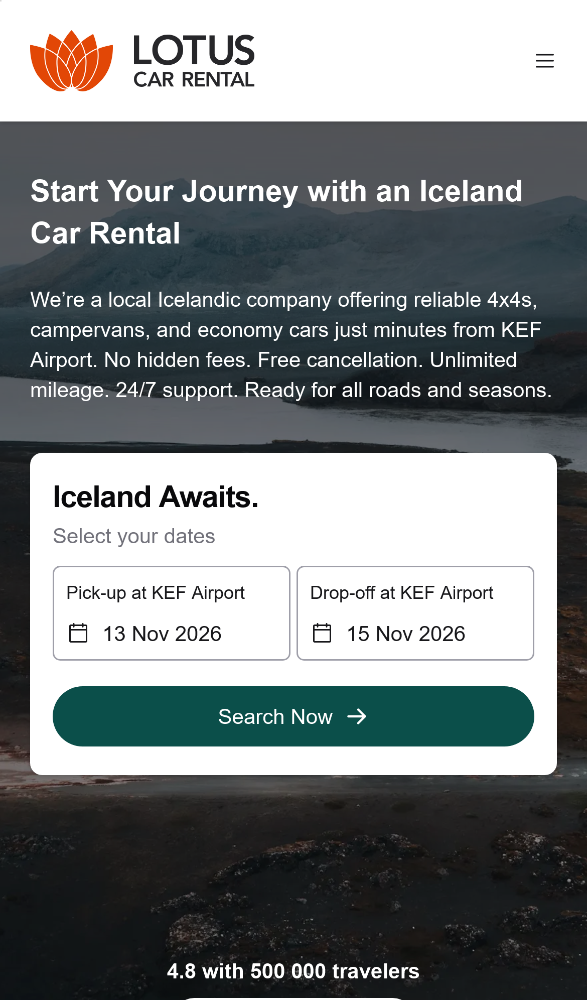
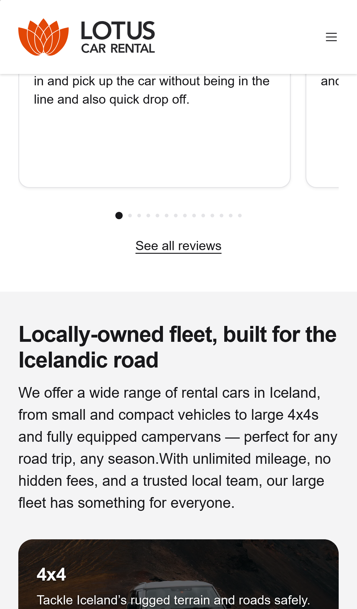
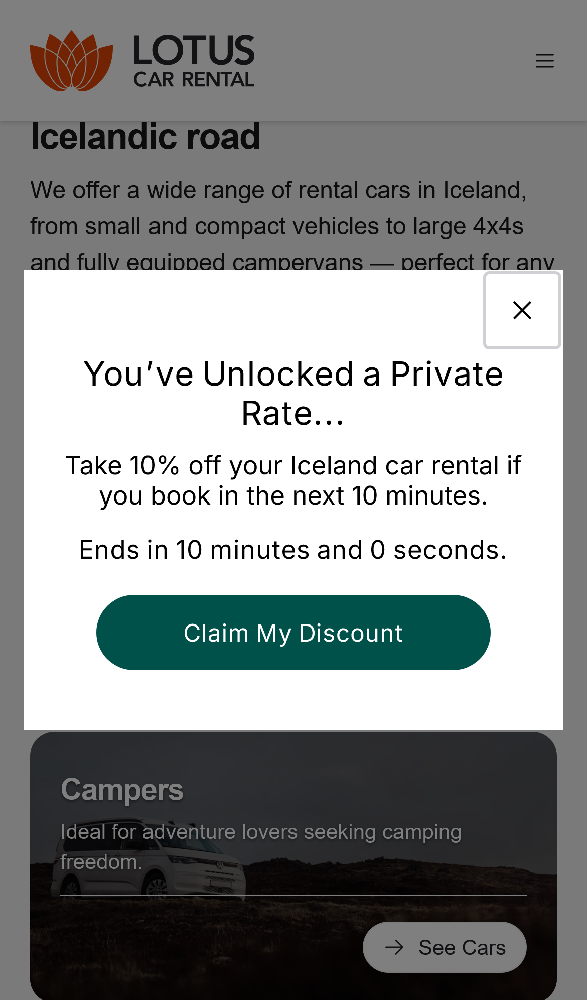
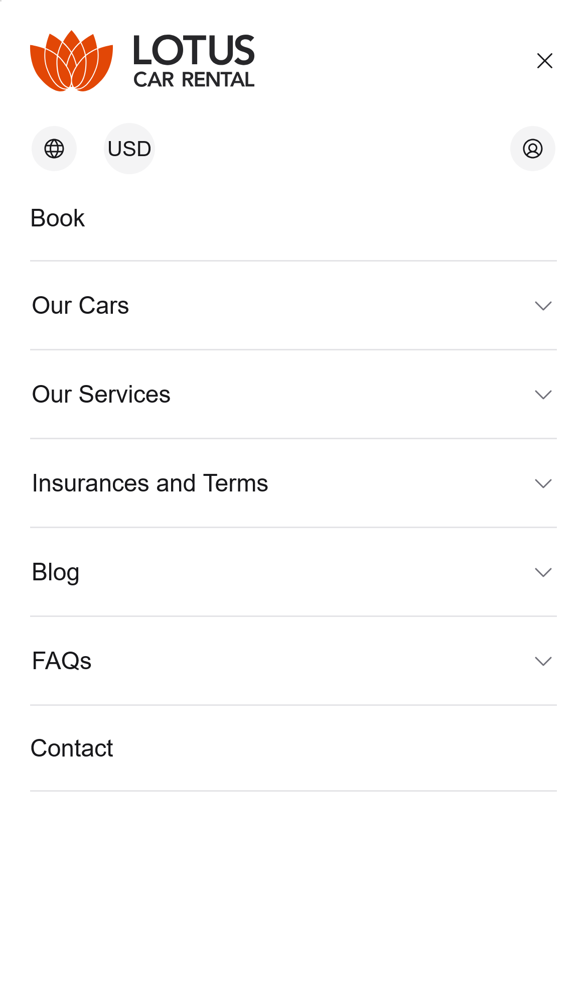
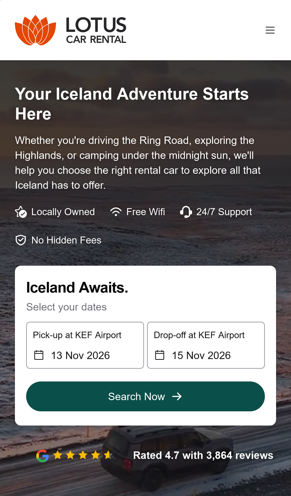
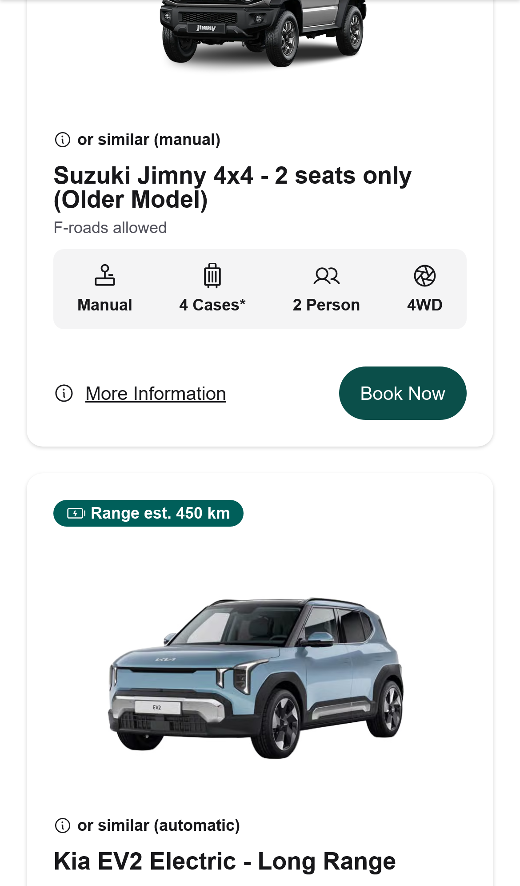
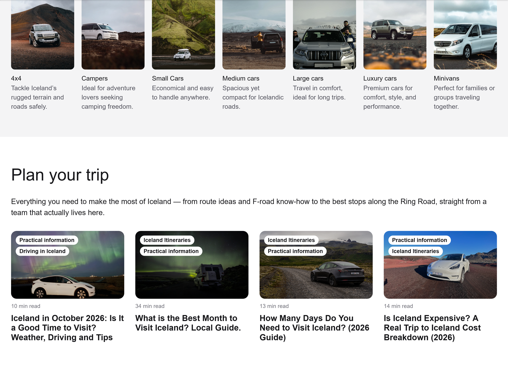
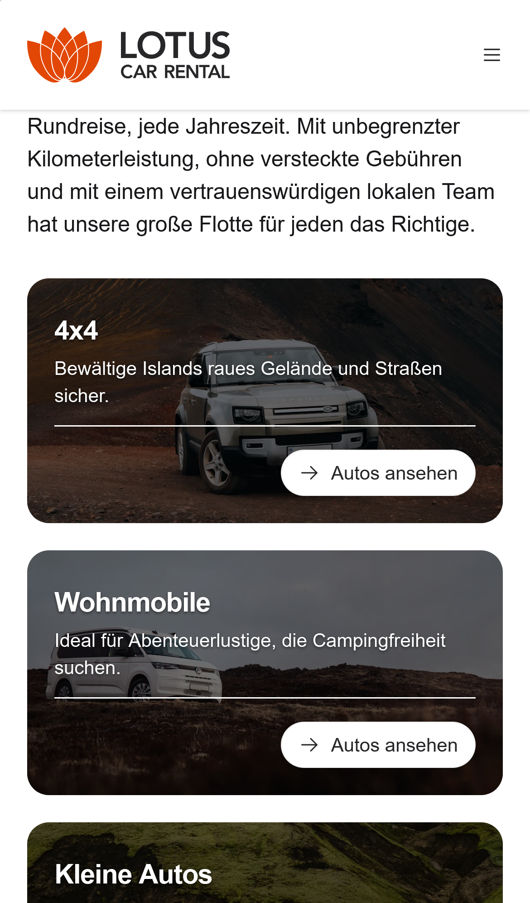